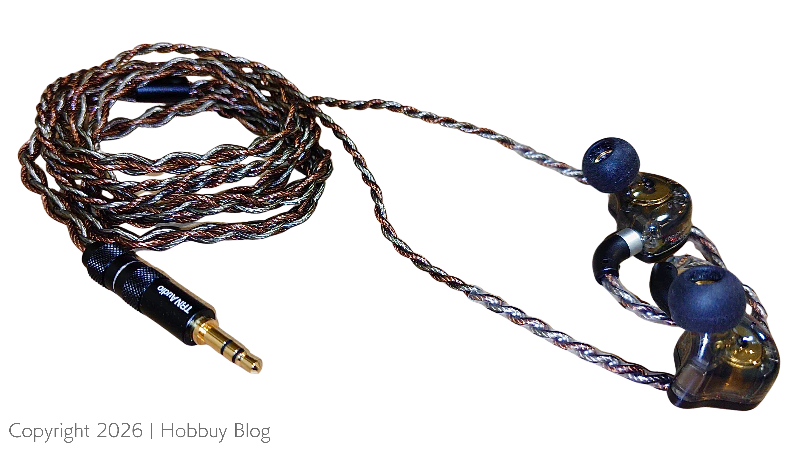
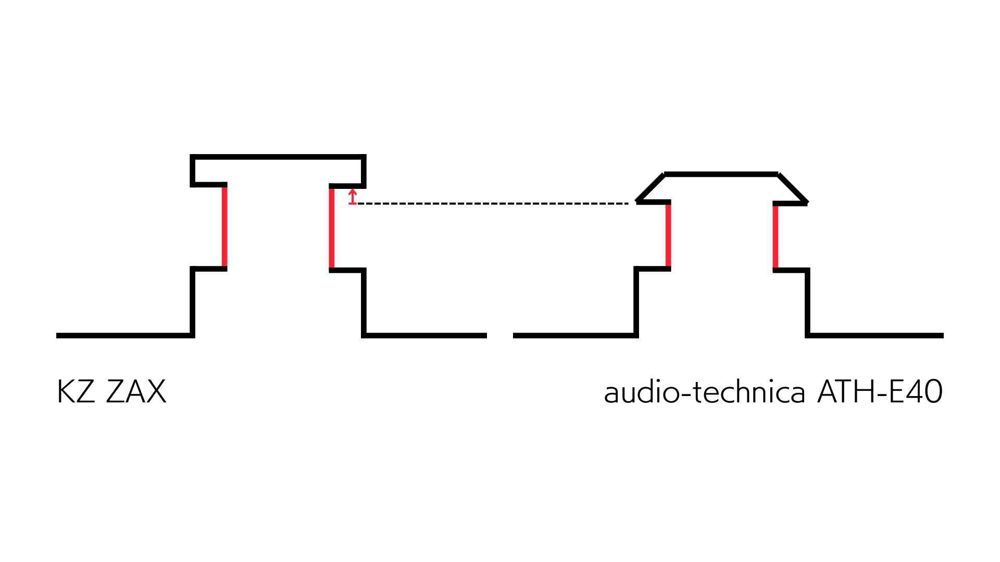

今回はKZ ZAXのレビューです．(以下の写真はケーブルとイヤーピースと交換した後のものです)
【Amazon】KZ ZAXを購入

ZAXと後継のZAS，ZARも考慮しましたが，Walkman(NW-A55)のレビューで書いた通りRADWIMPSの大ファンですのでその世界観が似合いそうなZAXを選びました．
まず言っておかなければいけないことがあります．
本レビューはNW-A55の音量を最大にした上で以下のEQ設定を適用し，RADWIMPSの曲を何周も再生して調教したのちの音についてのレビューです．
箱出し状態の音質についての言及であればそう書きますし，逆に人によって音の好みは違えば調教のやり方も違うでしょうし，あくまで一個人の感想として参考にしてください．(参考になればですが)
周波数 - <---------------> + ６０ ----------~---------| ４００ ----------~-------|-- １ｋ ----------~---------| ２．５ｋ ----------~----|----- ６．３ｋ ----------|---------- １６ｋ ----------|----------
また，再生機はNW-A55です．
エージング時のみ，以下のセットアップで放置しています．
NW-A55からXY-C50LにBluetoothで接続し，そのXY-C50LにKZ ZAXを接続するという構造です．
このパワーアンプはアクティブスピーカーを繋げば「それっぽい」音は出ますし，音圧も出るのですが，トランス式電源を繋ぐべきかと言われると全力で否定する音質です，気休め程度であることをご理解ください．

また本レビューでは基本的に本来の付属品を使っていないので，ここで付属品について触れます．
ケーブルは，そもそもプラグに錆のような汚れがありました．
キムワイプで強く拭いてやれば最低限使える状態でしたが，リケーブルしました．
交換ケーブルについては後ほど触れます．
次にイヤーピースですが，これは「可もなく不可もなく」ならぬ「可ではなく不可」です．
ペラペラすぎて「刺している」というよりかは「乗っている」感じでした．
交換イヤーピースについても後ほど触れていきます．
箱出し状態
箱出し状態では，私が好きなアーティストの曲のどれとも世界線が合わない音でした．
強いて言うならボカロ曲が合いそうかな，というくらいです．
ここを基準にします．
調教12時間地点
かなり好みに寄ってきました．
全帯域で振動板の動きの渋さが取れてきたのか，再生時の音圧も大幅に上がりました．
RADWIMPSの世界観とも合うようになってきましたが，BUMP OF CHICKENの方が合うかな…っていう感じです．
RADWIMPSファンとしてはなんともいえない虚無感を味わってしまいました．
まだまだフラットなので，「KZらしさ」を出すためには更なる調教が必要だと思います．
調教24時間地点
この段階でイヤーピースを変更しています．
そのためその変化にも触れます．
イヤーピース変更
最初に取り付けたSonyのマルチタイプ(EP-EX11M)から，JVCのSpiral Dot(EP-FX9M-B)に変更しています．
どちらも黒色のイヤーピースで，これは型番からも分かりますが，どちらもMサイズです．
Spiral Dotに変更したことでベースの低音が「ずぅぅぅぅぅん…」としっかり響いてくれるようになって，さらに高音の刺さりも幾分か取れたので，一旦これでいきます．
final TYPE Eイヤーピースも試す予定ですが，この24時間地点ではなくもっと後で行います．
ちなみに遮音性は下がり，イヤーピースそのものの安定感もSonyのものに少々劣るように感じます．
(軸径・引っ掛け部の幅を選ばない万能イヤーピースとしてSonyのマルチタイプを用意しているのは一通り間違いの音を出してくれるからです．)
またノズルの軸径は一般的だと思いますが，引っ掛け部の幅が広めです．(下図)
そのため，イヤーピースによってははまりにくい，あるいは緩くなるかと思います．
実際にSpiral Dotイヤーピースにおいても引っ掛け部の幅が合わず少し緩い装着になっています．

経過時間による変化
ドライバの大多数を占める中音域BAがほぐれてきました．
片耳で低音DD×1，フルステージBA×4，ボーカルBA×2，トゥイータBA×1構成となっているのですが，そのうちフルステージBAとボーカルBAを合わせた計6つのBAが中音域を担当しています．
これらがほぐれてきたのでギターの情報量が増え，さらにボーカルが近くなっています．
ただし，高音の刺さりはあまりありません．
トゥイータBAに関しては刺さりやすいことで有名だそうですが，少なくとも私の感想としては「ドンシャリ」の「シャリ」が足りなくて普通に「低音が少し強めの綺麗に音が出るイヤモニ」感があります．
JVC HA-FX33Xとかいう低音バカイヤホン(褒め言葉)で感覚が狂ったのかもしれませんが．
※対照実験のため，ここの評価はSonyマルチタイプイヤーピースに基づいて書いていますが，以降はSpiral Dotを基準とします．
リケーブルによる変化
24時間地点と36時間地点の間でリケーブルを行いました．
使用したケーブルはTRN RedChainという銀メッキ無酸素銅線(銀メッキOFC線)と無酸素銅線(OFC線)を組み合わせたエントリークラスのリケーブルです．
ケーブル交換後ですが，かなり変化がありました．
- 高音域の伸びが改善
- 重低音域の響きが改善
- 音場が拡大
- ケーブルそのものの巻きやすさが改善
重低音と高音が改善したことによって他の方のレビューを読んで予想していた音に近づいたと感じました．
また音場も相当に広くなりましたので，ライブ感なんかも楽しめるようになりました．
なにせ低音の響きが圧倒的に良くなったものですから，RADWIMPSの世界観に一層近づいたと感じます．
その代わり…と言ってはなんですが，重低音と高音が強く出てくるようになったので聴き疲れするようになったと感じます．
純正付属ケーブルは巻きぐせもひどく，イヤホンの個性を殺しているようにも思えますが，疲れはしない…くらいの良さはあるのかもしれません．